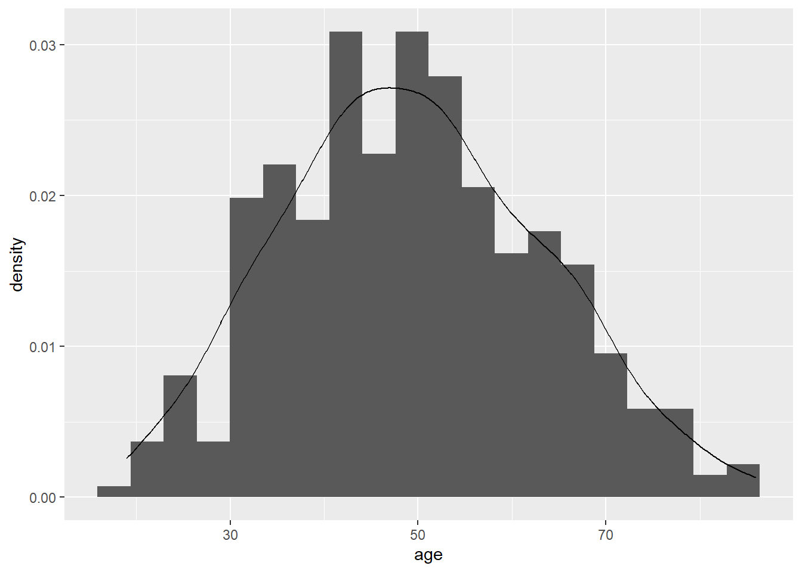

Week 3 Week 2
3.1 R Instructions
For this lesson, make sure you have loaded the following packages.
library(skimr)
library(gtsummary)
library(epiR)
library(broom)
library(pROC)
library(gmodels)
library(survival)
library(tidyverse)There are several ways to see the variables in your dataset.
By click on the blue circle with an arrow next to the name of your dataset in the “environment” tab, you can see the variable name, the variable type, the values from the first several observations, and any label or format attributes associated with the variable.
You can see the same information in the console window using the str function.
## Classes 'tbl_df', 'tbl' and 'data.frame': 386 obs. of 11 variables:
## $ id : num 541836 285383 332777 566828 193254 ...
## ..- attr(*, "format.stata")= chr "%9.0g"
## $ sex: num 0 1 0 1 1 1 0 0 1 0 ...
## ..- attr(*, "label")= chr "1 if woman, 0 if man"
## ..- attr(*, "format.stata")= chr "%9.0g"
## $ age: num 33 55 52 53 57 31 54 26 52 66 ...
## ..- attr(*, "format.stata")= chr "%9.0g"
## $ p1 : num 0 0 0 0 0 0 0 0 0 0 ...
## ..- attr(*, "label")= chr "pain at time 1 postop"
## ..- attr(*, "format.stata")= chr "%9.0g"
## $ p2 : num 0 1 0 0 1 0 1 0 0 1 ...
## ..- attr(*, "label")= chr "pain at time 2 postop"
## ..- attr(*, "format.stata")= chr "%9.0g"
## $ p3 : num 0 1 3 0 2 2 4 1 0 1 ...
## ..- attr(*, "label")= chr "pain at time 3 postop"
## ..- attr(*, "format.stata")= chr "%9.0g"
## $ p4 : num 0 1 3 1 3 2 1 0 0 1 ...
## ..- attr(*, "label")= chr "pain at time 4 postop"
## ..- attr(*, "format.stata")= chr "%9.0g"
## $ t : num 0 3 6 1 6 4 6 1 0 3 ...
## ..- attr(*, "label")= chr "total pain score times 1 - 4"
## ..- attr(*, "format.stata")= chr "%9.0g"
## $ x : num 2 2 1 2 2 1 1 1 2 1 ...
## ..- attr(*, "format.stata")= chr "%9.0g"
## $ y : chr "campus" "campus" "campus" "campus" ...
## ..- attr(*, "format.stata")= chr "%9s"
## $ z : num 1 1 NA NA 1 3 1 1 3 1 ...
## ..- attr(*, "format.stata")= chr "%9.0g"The commands you might think about using for the data sets sent after lecture 2 are given below. I give examples from lesson1a.rds, the data I sent after lecture 1.
3.1.1 Summarizing continuous variables
The function skim will give summary statistics for specified variables.
## Skim summary statistics
## n obs: 386
## n variables: 11
##
## -- Variable type:numeric ------------------------------------------------------------------------------------
## variable missing complete n mean sd p0 p25 p50 p75 p100 hist
## age 0 386 386 49.48 13.75 19 40 49 59 86 ▂▅▇▇▆▅▂▁So you can tell you have data on age for 386 patients (“obs” standards for “observations”), the mean age was 49 years, standard deviation of the mean was 13.8.
The numbers below “p0”, “p25”, “p50”, “p75” and “p100” are the centiles. “p0” indicates the minimum value, and “p100” indicates the maximum value, so you can tell that the youngest patient was 19 and the oldest was 86. “p50” is the median (49 years), and the interquartile range is reported under “p25” and “p75” (40, 59).
## Skim summary statistics
## n obs: 386
## n variables: 11
## group variables: sex
##
## -- Variable type:numeric ------------------------------------------------------------------------------------
## sex variable missing complete n mean sd p0 p25 p50 p75 p100
## 0 age 0 181 181 49.07 13.61 19 40 49 58 82
## 1 age 0 205 205 49.85 13.9 21 40 49 60 86
## hist
## ▂▃▇▇▆▅▂▂
## ▂▆▇▇▆▆▂▁The group_by function allows you to group your data and perform analyses separately group. For example, the above code groups by sex, so the mean, standard deviation and other summary statistics are presented separately among men and among women.
3.1.2 Centiles
You can get R to give you centiles directly by using the quantile function. The option na.rm = TRUE tells R to ignore any missing (NA) values when calculating the centiles.
## 0% 25% 50% 75% 100%
## 19 40 49 59 86The first row of the results says that you are looking at the 0, 25, 50, 75, and 100 centiles, i.e. the minimum and maximum, and the medium and quartiles. The second row gives you the actual values. So you could report this as “Median age was 49 (quartiles 40, 59).”
You aren’t restricted to quartiles with the quantile function. For example, you can use the code below to give you the 11th, 45th and 78th centile, as well as 91.5 centile, which would be the 915th highest value in a dataset of 1000 observations.
## 11% 45% 78% 91.5%
## 32.0 47.0 60.3 69.03.1.3 One-way tables
The tbl_summary function (from the gtsummary package) gives a frequency table, in this case, the number of men and women.
tbl_summary(
lesson1a %>% select(sex), # Select data and variables to include
type = list(vars(sex) ~ "categorical") # Show all levels of binary variables
)| Characteristic1 | N = 386 |
|---|---|
| 1 if woman, 0 if man | |
| 0 | 181 (47%) |
| 1 | 205 (53%) |
|
1
Statistics presented: n (%)
|
|
So there are 205 (53%) women and 181 (47%) men.
3.1.4 Two-way tables
The tbl_summary function can also give a two-way table, for example, a table that shows where operations were done (remember that the variable “y” gives the part of the hospital) in men and women separately.
tbl_summary(
lesson1a %>% select(sex, y), # Select both variables
by = "y", # The "by" option specifies which will be the column variable
type = list(vars(sex) ~ "categorical")
)| Characteristic1 | campus, N = 240 | harding, N = 39 | peds, N = 40 | satellite, N = 67 |
|---|---|---|---|---|
| 1 if woman, 0 if man | ||||
| 0 | 115 (48%) | 15 (38%) | 19 (48%) | 32 (48%) |
| 1 | 125 (52%) | 24 (62%) | 21 (52%) | 35 (52%) |
|
1
Statistics presented: n (%)
|
||||
This shows that, for example, there were 240 operations done at the main campus, 115 of these were done on men and 125 on women. This shows that 48% of the operations at the satellite were on men and 52% on women.
You can use the add_overall function to show the total across all sites as well:
tbl_summary(
lesson1a %>% select(sex, y),
by = "y",
type = list(vars(sex) ~ "categorical")
) %>%
# Add a column with totals across all locations
# "last = TRUE" puts the column on the right side of the table
add_overall(last = TRUE)| Characteristic1 | campus, N = 240 | harding, N = 39 | peds, N = 40 | satellite, N = 67 | Overall, N = 386 |
|---|---|---|---|---|---|
| 1 if woman, 0 if man | |||||
| 0 | 115 (48%) | 15 (38%) | 19 (48%) | 32 (48%) | 181 (47%) |
| 1 | 125 (52%) | 24 (62%) | 21 (52%) | 35 (52%) | 205 (53%) |
|
1
Statistics presented: n (%)
|
|||||
Overall, 47% of the patients treated in the hospital were men and 53% were women.
By default tbl_summary gives column percents (here, the percentage of patients who are men and women at each site). You can also get the row percents (for example, the percentage of women treated at each site) using the row_percent option.
tbl_summary(
lesson1a %>% select(sex, y),
by = "y",
type = list(vars(sex) ~ "categorical"),
row_percent = TRUE # get the row percent instead of column percent
)| Characteristic1 | campus, N = 240 | harding, N = 39 | peds, N = 40 | satellite, N = 67 |
|---|---|---|---|---|
| 1 if woman, 0 if man | ||||
| 0 | 115 (64%) | 15 (8.3%) | 19 (10%) | 32 (18%) |
| 1 | 125 (61%) | 24 (12%) | 21 (10%) | 35 (17%) |
|
1
Statistics presented: n (%)
|
||||
This shows that, for example, 8.3% men and 12% women had operations at the “Harding” site.
Passing a dataset to the count function with no additional options will count the number of total observations.
## # A tibble: 1 x 1
## n
## <int>
## 1 386The filter function allows you to subset groups of data. The filter function takes a condition, similar to an if_else statement. However, filter only keeps observations in the data that meet that condition.
For example, we can use filter to count the number of women in the dataset, or the number of operations on women at the main campus. Don’t forget that you need to use two equals signs here.
## # A tibble: 1 x 1
## n
## <int>
## 1 205# Count the number of women treated at the main campus
lesson1a %>%
filter(sex == 1 & y == "campus") %>%
count()## # A tibble: 1 x 1
## n
## <int>
## 1 125Note that because we did not use lesson1a <- to save these datasets, we did not alter our original dataset. You can use the count function to confirm that lesson1a still contains all observations.
3.1.5 Graphing
We won’t be doing much on the graphical presentation of data in this course (this has been called “graphicacy”). The only reason we are doing it here is to get a visual impression of whether data are normally presented (not something you’d want to publish).
The following might sound a little complicated, but just follow it through and everything will be fine.
First, run the following code.
## `stat_bin()` using `bins = 30`. Pick better value with `binwidth`.
ggplot indicates that you want to create a graph. The dataset “lesson1a” is specified in the data option, and aes(x = age) means that the variable on the x-axis should be age. geom_histogram takes this data and graphs it as a histogram.
One of things that R does is to choose the number of bars for you. You can set this yourself by using the bins option. Try setting the number of bins to 40.

The graph looks “lumpy” because you are breaking the data up into too many small pieces.
The following code will superimpose a curve for the normal distribution.
ggplot(data = lesson1a,
aes(x = age)) +
geom_histogram(aes(y = ..density..), bins = 20) +
geom_density()
3.1.6 Further Reading
Only read this if you are feeling really keen…
## Estimate CI lower CI upper Std. Error
## 49.4844560 48.3301266 50.6387853 0.7000938This gives the mean of age, its standard error and its 90% confidence interval (I’ll explain confidence intervals next week: one thing you might want to think about is to compare the two numbers given for the confidence interval with the 5% and 95% centile using quantile(lesson1a$age)).
## Estimate CI lower CI upper Std. Error
## [1,] 0.5310881 0.4799345 0.5817614 0.02540009For a binary variable, the function ci.binom from the gmodels package is used. This gives the proportion of women along with 95% confidence intervals (95% is the default, meaning if you don’t specify a level, it assumes you want the 95% confidence interval.)
3.1.7 Using R as a calculator
R can be used as a calculator:
## [1] 49log() is the natural logarithm (to base e)
## [1] 0.9999993exp() is the inverse natural logarithm, that is, if exp(x)=y, ey=x
## [1] 2.718282log10() gives the log to base 10
## [1] 2cos(45) gives the cosine of 45
## [1] 0.525322Some of the functions give useful statistical constants.
pnorm(x) gives the probability that an observation will be less than mean + x standard deviations.
## [1] 0.8413447## [1] 0.3085375pnorm(1) gives 0.84 - this means that 84% of a normally distributed set of data will be less than one standard deviation above the mean.
pnorm(-0.5) gives 0.31, meaning that 31% of a normally distributed set of data will be less than half a standard deviation below the mean.
If you had a pain score with a mean of 5 and a standard deviation of 2, you could predict that only 16% of patients would have pain scores of 7 or more and that 70% would have pain scores of 4 or more.
## [1] 0.9750021## [1] 0.0249979pnorm(1.96) gives 0.975 and pnorm(-1.96) gives 0.025. So 97.5% of observations are less than 1.96 standard deviations greater than the mean, and 2.5% are less than 1.96 standard deviations lower than the mean. In other words, 95% of observations are within 1.96 standard deviations of the mean.
3.2 Assignment
It seems like a lot of them, but the task shouldn’t take you very long. However, a general rule in this class is: you don’t have to do all the questions in the assignment. Try to do at least some (say, at least 2a and 2b), so that you know what we are talking about next week in class. Also, the more you do the more you’ll learn. However, don’t drive yourself crazy trying to get them all done.
I am phrasing the questions in ordinary English, pretty much as you would do if you were an investigator. For example, I ask you to summarize the data on race time in marathon runners, rather than say: “provide the mean of the variable rt by typing skim(lesson2a$rt)”. But this means you are going to have to work out what the various variable codes are and what commands to use.
All of these questions ask you to “summarize” data. In other words, how would you describe the data in a journal article (say, your table 1)? One quick clue here: I don’t ever want the standard error, we’ll talk more about that next week.
3.2.1 Assignments
- lesson2a.rds: This is data from marathon runners: summarize age, sex, race time in minutes (i.e. how long it took them to complete the race) and favorite running shoe
- lesson2b.rds: Postoperative pain (this is a similar data set as you had before for the assignment for the first class). Summarize average pain after the operation. Imagine you had to draw a graph of “time course of pain after surgery”. What numbers would you use for pain at time 1, time 2, time 3 etc.?
- lesson2c.rds: This is data on 242 patients undergoing radical prostatectomy. Summarize age, stage, grade and PSA.
- lesson2d.rds: Cost of a minor medical procedure. Summarize cost.
- lesson2e.rds: Total cancer pain in one month in a group with chronic cancer pain. Summarize pain scores and number of days with pain.